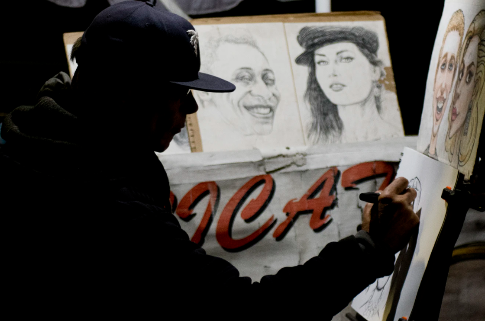

collage
Découvrez la méthode complète pour dessiner comme dans Sin City, avec des ombres style noir comics, très sombres et découpées. Avec les techniques démontrées dans ce tutoriel complet, vous aurez de nouveaux outils pour dessiner vos ombres progressivement sans prendre le risque de gâcher votre dessin. _ https://www.apprendre-a-dessiner.org/blog/
Dans cet article vous apprendrez tout sur le dessin et les ombrages à base de hachures. Nous avions vu dans une ancienne vidéo comment faire pour encrer avec un pinceau fontaine. Dans ce nouveau tutoriel, nous regarderons plus en détails comment hachurer correctement les ombres. _ https://www.apprendre-a-dessiner.org/blog/

Vous êtes nombreux à très régulièrement me poser des questions sur la création de BD et de scénario. Autant vous le dire tout de suite, il n’y a pas UNE méthode, mais plusieurs. Bien évidemment certaines étapes sont universelles ou très répandues, alors que d’autres sont propres à chaque projet ou intervenant.Comme vous le savez déjà, depuis plusieurs années, différents protagonistes politiques se sont penchés sur la question des formations disponibles sur le marché de l’enseignement supérieur. https://www.apprendre-a-dessiner.org/blog/
Voici la sélection des 15 tatoueurs qui ont attiré notre attention. Même si tout le monde n’apprécie pas forcément l’art du tatouage, voici une dose d’inspiration pour les dessinateurs et dessinatrices en quête d’inspiration, ou même pour les artistes en herbes qui souhaitent devenir tatoueur professionnel (dit tatoo artist en anglais). Cet article est la suite logique de l’article: Comment créer un logo Enfonçons une porte ouverte : l’être humain se révèle être très sensible aux stimuli visuels. https://www.apprendre-a-dessiner.org/blog/page/2/